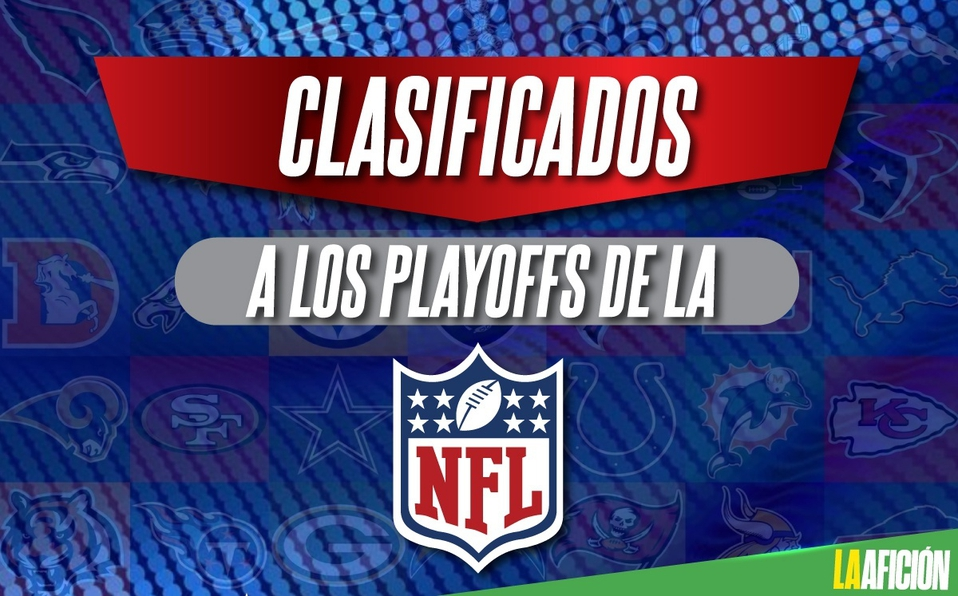

Poco a poco vamos conociendo a los equipos que aún seguirán en la pelea por el Vince Lombardi, ya que este fin se jugaron los de la última semana de latemporada regular de la NFL, donde ya quedaron definidos los clasificados a los playoffs.
Tras el juego entre los Chargers y los Raiders quedaron listas las 14 franquicias que se ganaron los boletos a la postemporada, de los cuales 7 son de la Conferencia Americana y 7 de la Conferencia Nacional, pero para que nos quede más claro el panorama de los playoffs, a continuación te explicaremos cuándo son, quiénes están clasificados y cómo quedan los partidos tras los resultados de la Semana 18 de la NFL.La postemporada (conocida también como “Playoffs”) consta de cuatro jornadas adicionales al cierre de la temporada regular, en donde juegan los siete mejores equipos de cada una de las conferencias (catorce en total). Esta es su estructura (tomando como ejemplo tan sólo una de las conferencias, pudiendo extrapolarse a la otra):
Los partidos se efectuarán de la siguiente manera:
La temporada finaliza oficialmente con el Pro Bowl (en México: “Tazón de los Profesionales”) que se efectúa una semana antes del Super Bowl. Desde 1980, se ha venido disputando en Honolulu, Hawái. Sin embargo, la liga ha decidido mantener el Pro Bowl de 2009 en Honolulu. Anteriormente el Pro Bowl consistía en que los mejores jugadores de la AFC se enfrentaban a los mejores de la NFC, pero a partir de la temporada 2013-14 el partido consiste en hacer un draft (selección) de jugadores sin importar a qué conferencia pertenezcan. Los equipos llevan el nombre de sus líderes (que son los que seleccionan a los jugadores), que en el caso de la temporada 2013-14 fueron Jerry Rice y Deion Sanders, quienes actualmente pertenecen al Salón de la Fama. La NFL experimentó desde el Pro Bowl de 2014 hasta el de 2016, el formato donde los equipos eran entrenados y elegidos por miembros del Salón de la Fama, y no el formato habitual de enfrentar a ambas conferencias. Sin embargo, el Pro Bowl de 2017 volverá a dicho formato de AFC-NFC.